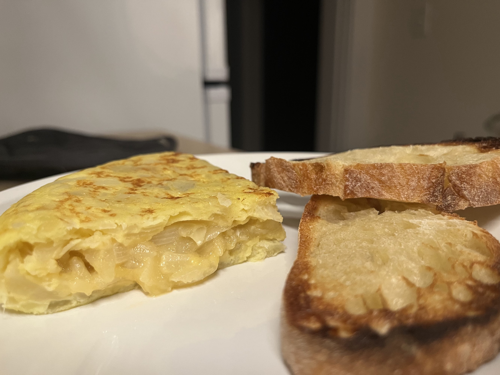

Tortilla de Patatas

Description
Spanish omelette or Spanish tortilla is a traditional dish from Spain. Celebrated as a national dish by Spaniards, it is an essential part of the Spanish cuisine.
It is an omelette made with eggs and potatoes, optionally including onion. It is often served at room temperature as a tapa.
It is commonly known in Spanish-speaking countries as tortilla de patatas, tortilla de papas, or tortilla española.
Ingredients
- 1 medium onion
- 5 medium russet potatoes (4 to 4 1/2 cups once cooked)
- 5 eggs
- Olive oil
- Salt
Steps
- Add olive oil to a 10 or 12 inch skillet over medium heat.
- Add sliced potato and onion to the pan; they should be mostly covered with olive oil (add a little more oil if needed).
- Season with 1 ½ teaspoon sea salt. Cook on medium-high heat, maintaining a gentle boil, for 8-12 minutes, turning occasionally, until potatoes are just fork tender.
- Drain potatoes, reserving oil for later use. Taste and season potatoes with more salt, if needed. Allow them to cool for a few minutes.
- Meanwhile crack the eggs into a bowl and season with about ½ teaspoon of salt. Beat the eggs together and pour over the cooked potatoes and onion and toss to coat.
- Add a little bit of oil to the bottom of a 10-inch non-stick skillet over high heat. Once hot, pour potato mixture into it and cook on high heat for 1 minute. Reduce heat to medium-low and cook for about 5 minutes.
- Run a rubber spatula along the outer edges of the tortilla to make sure it’s not sticking and to help it form its shape.
Once it starts to firm up around the edges and in the center (although it will still be a little runny on top) place a large plate (larger than the size of the pan) over the pan and flip the omelette onto the plate.
-
Now gently slide the omelette back into the pan. Aim the omelette to slide into the very back of the skillet and use the spatula to help slide the rest of it off the plate and into the pan.
- Now use the spatula again to press the sides of the omelette in and under, to keep that rounded edge.
- Cook on high heat for 1 minute, and low heat for 2-3 more minutes or until done. It’s done when it feels set in the center and a knife or toothpick inserted into the center comes out clean.
- Flip the finished tortilla de patatas back onto a plate, and serve. Serve warm or at room temperature.